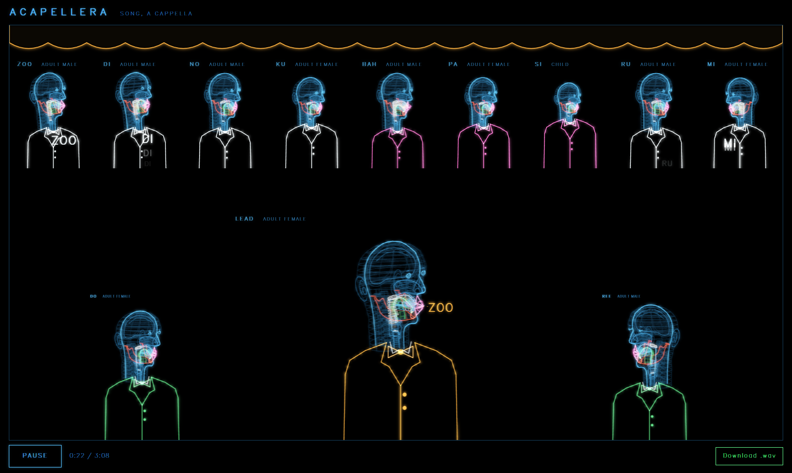
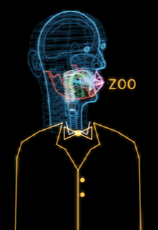
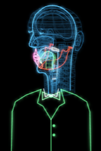
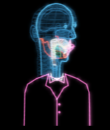
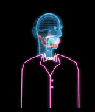
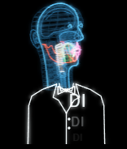
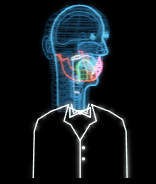
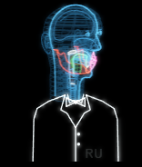

Acapellera
曲のファイルをドロップすると、12 人の団員がその曲をアカペラで歌い直します。
声はすべて CHIMERA の物理モデルによる合成音声です。元の録音は流しません。
GitHub でソースを見る →
団員紹介
リード手前の中央

歌声の中でいちばん強い音を歌います。歌う言葉は音の高さで変わります。同じ音が続くところでは、元の歌声から、伸ばすか言い直すかを判断します。サビでは姿も声も前に出ます。
ハモリ手前の左右

歌声で 2 番目に強い音を歌います。

歌声で 3 番目に強い音を歌います。
ドラム奥の中央

ドラムの低い音を短く刻みます。

ドラムの中くらいの音を刻みます。

ドラムの高い音を刻みます。
コーラス隊奥の両側

ベースの低い方の音を歌います。

ベースの高い方の音を歌います。

ギターの低い方の音を歌います。

ギターの高い方の音を歌います。

ピアノの低い方の音を歌います。

ピアノの高い方の音を歌います。
ドラム以外の団員は、音と音の間をつないで歌い、間が空いたところで休みます。声の種類（男性・女性・子ども）は受け持つ音域で決まります。音の高さによる聞こえ方の差は補正し、サビでは全員の声が大きくなります。
処理の流れ
動かし方
アプリは自分の PC で動かします。重い処理は同じ PC でも、ssh でつながる GPU サーバでも実行できます。このページは紹介のみで、曲を受け取りません。ドロップした曲は自分の PC とサーバの外には出ません。
git clone https://github.com/YUSEITASHIRO/acapellera
cd acapellera
bun install
bash acapellera/server/setup.sh # 処理側の環境（初回のみ）
bash acapellera/server/setup_engine.sh # 合成エンジン（初回のみ）
python acapellera/launch.py # GPU サーバで処理するときは --remote詳しくは acapellera/README.md。
クレジット
CHIMERA（Jameson Hodge、MIT）、demucs（MIT）、basic-pitch（Apache-2.0）、SongFormer（CC BY 4.0）。効果音の一部は OtoLogic（CC BY 4.0）。